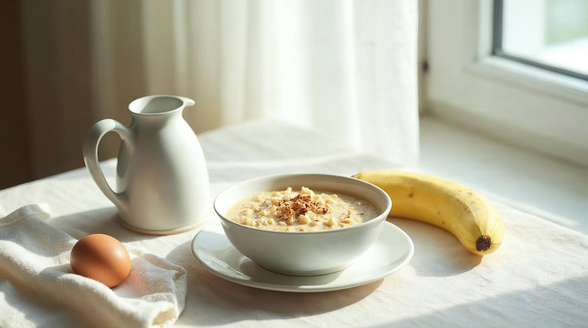
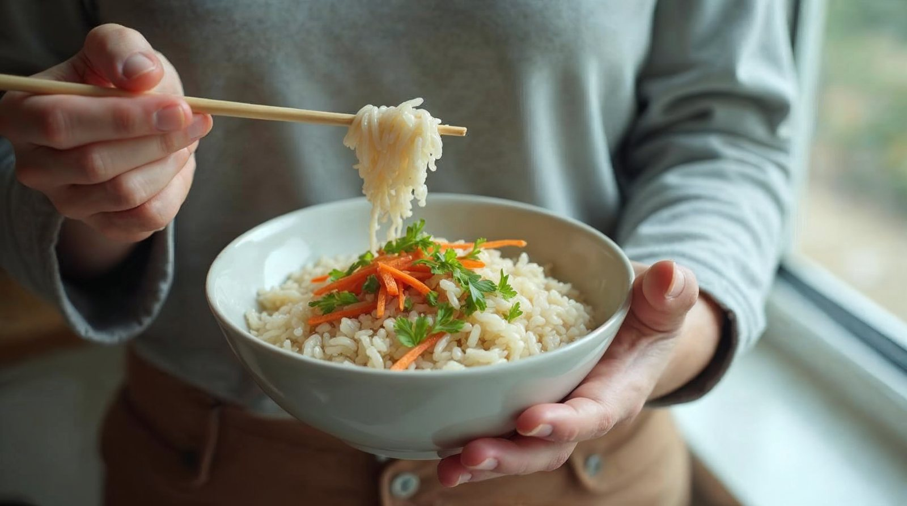
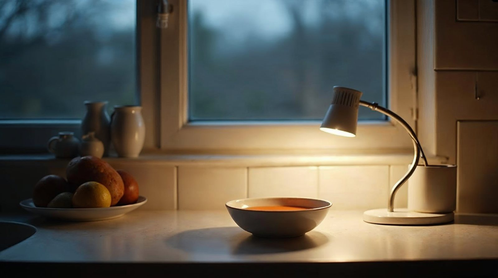

이종호 한의사 감수좋은꿈참사랑한의원 대표원장 (한의사 면허번호 19769)발행 2026-11-24 · 수정 2026-11-26
이 글의 차례
- 왜 이런 불편이 생길 수 있나요
- 하루가 어떻게 돌고 있나요?
- 몰아 먹기와 비슷해 보이는 경우는 어떻게 구별하나요?
- 식사 리듬은 공부 효율과도 이어져 있나요?
- 상황별 예시
- 스스로 점검해 보세요
- 먼저 이렇게 여쭙니다
- 일상에서 먼저 해 볼 수 있는 것
- 하루 식사 시간표는 이렇게 짜 볼 수 있어요
- 밤에 허기가 몰려올 때는 이렇게 해 보세요
- 학원가에서 낮 식사를 챙기는 요령
- 몇 주에 걸쳐 이렇게 바꿔 갑니다
- 왜 잠과 함께 봐야 할까요?
- 한의학에서는 이 흐름을 어떻게 보나요?
- 체중보다 먼저 살펴볼 신호
- 주말이나 시험 끝난 날은 어떻게 하나요?
- 한의원에서 함께 살필 수 있는 경우
- 첫 진료는 이렇게 진행됩니다
- 이렇게 기록해 오시면 상담이 쉬워집니다
- 이런 증상은 먼저 확인이 필요합니다
낮 식사를 거르지 않는 것이 밤에 몰아 먹는 습관을 줄이는 첫걸음입니다. 공부하다 점심을 놓치고 밤에 너무 배고파 한 번에 많이 먹는 노량진 수험생이 적지 않고, 이런 날이 이어지면 아침에 속이 무겁고 체중도 출렁입니다.
저는 이런 이야기를 들으면 먼저 "의지가 약해서 그런 게 아닙니다"라고 말씀드립니다. 낮에 오래 굶은 몸이 밤에 허기를 한꺼번에 채우려는 것은 자연스러운 흐름이라, 참는 힘보다 하루 식사의 간격을 다시 짜는 쪽이 현실적입니다.
왜 이런 불편이 생길 수 있나요
- 낮에 오래 굶으면 저녁 무렵 허기가 크게 몰려와 한 번에 많이, 빨리 먹게 되기 쉽습니다.
- 밤늦게 먹고 바로 누우면 속이 불편하고 잠이 얕아져 다음 날 아침 입맛이 더 없어지는 흐름이 생깁니다.
- 잠이 부족하면 식욕이 커지는 경향이 있다고 알려져 있어 잠과 식사는 함께 흔들리기 쉽습니다.
- 공부 스트레스를 먹는 것으로 푸는 분도 있어 마음의 긴장도 함께 살피는 것이 좋습니다.
- 낮에는 긴장해서 배고픔을 잘 못 느끼다가 공부를 마치고 긴장이 풀리는 밤에 허기가 한꺼번에 밀려온다는 분도 많습니다.
하루가 어떻게 돌고 있나요?
끼니를 거르다 밤에 몰아 먹는 날은 대개 비슷한 순서로 흘러갑니다. 늦게 자서 아침에 입맛이 없고, 아침을 거른 채 오전 수업을 듣고, 점심은 시간에 쫓겨 넘기거나 과자로 때웁니다.
오후에는 단 음료나 커피로 버티다 저녁 무렵 기운이 뚝 떨어지고, 밤 공부를 마치면 참았던 허기가 터져 라면이나 치킨, 빵을 한꺼번에 먹게 됩니다. 배가 부른 채 늦게 잠들면 다시 다음 날 아침 입맛이 없어 같은 하루가 반복됩니다.
하루 이틀은 버틸 수 있어도 몇 주씩 이어지면 아침 더부룩함, 오후 무기력, 체중 출렁임이 함께 따라옵니다.
이 고리는 한곳만 끊어도 조금씩 풀립니다. 저는 보통 점심 한 끼를 지키는 것과 잠드는 시각을 당기는 것, 이 두 가지 가운데 지금 더 쉬운 쪽부터 시작하자고 말씀드립니다.
몰아 먹기와 비슷해 보이는 경우는 어떻게 구별하나요?
밤에 많이 먹는다는 같은 모습이라도 사정은 사람마다 다릅니다. 무엇에 가까운지에 따라 먼저 바꿀 것이 달라집니다.
- 낮에 바빠 못 먹는 경우: 공부 일정 때문에 식사 시간을 놓치는 것이라, 미리 준비해 둔 간단한 음식이 가장 큰 도움이 됩니다.
- 낮에 입맛이 없는 경우: 전날 늦은 야식이나 짧은 잠, 긴장 때문에 낮 동안 배고픔이 무딘 경우가 많아 저녁 식사 시각과 잠을 먼저 봅니다.
- 마음이 지쳐 먹는 경우: 배가 고프지 않은데도 기분이 가라앉거나 불안할 때 먹게 된다면 마음의 긴장을 함께 살핍니다.
- 멈추기 어려운 경우: 배가 아플 만큼 먹고 나서 자책이 크고 이런 일이 자주 반복된다면 혼자 해결하려 하기보다 도움을 받는 것이 좋습니다.
식사 리듬은 공부 효율과도 이어져 있나요?
점심을 거른 날 오후에 글자가 눈에 안 들어오고 같은 줄을 몇 번씩 읽게 된다는 이야기를 자주 듣습니다. 오래 굶으면 머리를 쓰는 데 필요한 기운이 모자라 멍해지고, 이를 버티려 단 음료와 커피를 찾게 되면서 다시 저녁 허기가 커집니다.
반대로 밤에 많이 먹고 잔 다음 날은 아침이 무겁고 오전 수업 집중이 흐트러지기 쉽습니다. 그래서 끼니를 챙기는 일은 체중 관리이기 전에 공부 시간을 지키는 일이기도 합니다. 식사 시간을 아까워하기보다, 그 30분이 오후 세 시간을 받쳐 준다고 생각해 보시면 좋겠습니다.
상황별 예시
- 예를 들어 오전 수업이 끝나고 바로 자습실로 들어가 저녁까지 견과류 몇 알로 버티는 경우, 밤 열 시쯤 허기가 크게 몰려 야식을 두 사람 몫만큼 먹게 될 수 있습니다. 이럴 때는 점심 시간을 수업 시간표처럼 정해 두는 것부터 해 볼 수 있습니다.
- 예를 들어 새벽 두 시에 자고 아침 여덟 시에 일어나 입맛이 없는 경우, 아침을 거르는 것이 당연해집니다. 야식을 한 시간만 당기고 잠드는 시각을 조금씩 앞당기면 아침에 바나나 하나라도 넘어가기 시작합니다.
- 예를 들어 모의고사 성적이 나온 날마다 밤에 단 것을 많이 먹는 경우, 먹는 양보다 그날의 기분을 함께 적어 보면 흐름이 보입니다. 기분이 가라앉는 날을 미리 알면 그날 저녁을 든든히 먹어 두는 식으로 대비할 수 있습니다.
스스로 점검해 보세요
- 일주일에 사흘 이상 점심을 거르거나 과자로 때운다
- 하루 섭취량의 절반 넘게 저녁 여덟 시 이후에 먹는다
- 야식을 먹고 한 시간 안에 잠드는 날이 많다
- 아침에 일어나면 속이 더부룩하고 입맛이 없다
- 한 달 사이 체중이 2~3kg 넘게 오르내린다
- 배가 고프지 않은데 기분 때문에 먹는 날이 있다
세 가지 이상 해당된다면 식사 시간표부터 다시 짜 보세요. 바꾸려 해도 몇 주째 같은 흐름이 이어진다면 진료 때 이 목록을 함께 보며 이야기를 나누면 좋습니다.

먼저 이렇게 여쭙니다
- 하루에 몇 끼를 드시나요?
- 가장 많이 먹는 시간은 언제인가요?
- 밤에 먹고 바로 잠드는 날이 많은가요?
- 최근 체중이 눈에 띄게 늘거나 줄었나요?
- 낮에 배가 고프다는 느낌이 드나요, 아니면 아예 배고픔을 못 느끼나요?
- 밤에 먹을 때 주로 무엇을, 어디서 드시나요?
이 질문들은 잘잘못을 따지려는 것이 아니라 하루 가운데 어디가 가장 비어 있는지를 찾기 위한 것입니다. 예를 들어 점심이 비어 있는 분과 잠이 비어 있는 분은 같은 몰아 먹기라도 시작점이 다릅니다. 편하게, 있는 그대로 말씀해 주시면 됩니다.

일상에서 먼저 해 볼 수 있는 것
- 점심을 거르지 않도록 간단한 도시락이나 간식 준비하기
- 오후에 견과류나 우유 같은 간식으로 허기 줄이기
- 잠들기 3시간 전에는 식사 마치기
- 하루 식사 시각을 간단히 적어 보기
- 휴대폰 알람에 점심과 오후 간식 시각을 맞춰 두기
- 저녁은 공부를 마친 뒤가 아니라 밤 공부 전에 먹고, 공부 뒤에는 따뜻한 우유나 두유 정도로 마무리하기
- 야식을 사러 나가기 전에 물 한 잔 마시고 10분 기다려 보기
하루 식사 시간표는 이렇게 짜 볼 수 있어요
처음부터 세 끼를 완벽하게 챙기려 하면 오래가기 어렵습니다. 지금의 생활에서 한 칸씩만 채운다고 생각하면 마음이 가벼워집니다.
- 아침: 바나나, 삶은 달걀, 두유처럼 들고 나갈 수 있는 것 하나
- 점심: 수업이 끝나는 시각 바로 뒤로 정해 두고, 학원 근처 식당이나 준비해 온 도시락
- 오후 서너 시: 견과류 한 줌, 우유, 요거트처럼 허기를 덜어 줄 간식
- 저녁: 밤 공부를 시작하기 전, 밥과 반찬이 있는 식사
- 밤: 배가 고프면 따뜻한 우유나 두유 한 잔 정도로 마무리
간격이 4~5시간을 넘지 않게 맞추는 것이 핵심입니다. 오후 간식 하나만 생겨도 밤의 허기가 눈에 띄게 줄었다는 분이 많습니다.
밤에 허기가 몰려올 때는 이렇게 해 보세요
이미 밤이 되어 배가 몹시 고프다면 참으라고만 하기는 어렵습니다. 대신 먹는 방식과 양을 조금씩 바꾸면 다음 날 아침의 부담이 줄어듭니다.
- 바로 사러 나가지 말고 물이나 따뜻한 보리차 한 잔을 먼저 마시기
- 라면이나 튀김보다 두유, 우유, 바나나, 삶은 달걀처럼 가벼운 것 먼저 고르기
- 한 봉지를 통째로 들고 먹지 말고 그릇에 덜어 먹을 만큼만 꺼내기
- 휴대폰 영상을 보면서 먹지 않고 식탁이나 책상 한쪽에 앉아 천천히 먹기
- 먹고 나서 바로 눕지 말고 양치하고 10~20분쯤 정리할 시간 두기
양치를 하고 나면 더 먹고 싶은 마음이 줄었다는 분이 꽤 있습니다. 작은 방법이지만 "오늘 먹는 건 여기까지"라는 신호가 되어 줍니다.
학원가에서 낮 식사를 챙기는 요령
노량진처럼 학원이 모인 곳은 식당이 많아도 수업 시간이 겹치면 줄이 길어 끼니를 놓치기 쉽습니다. 몇 가지 준비만 해 두면 바쁜 날에도 한 끼를 지킬 수 있습니다.
- 전날 밤에 주먹밥, 삶은 달걀, 바나나처럼 들고 다닐 것을 가방에 넣어 두기
- 점심 시간이 짧은 날은 편의점에서 김밥이나 도시락과 우유를 함께 고르기
- 식당 줄이 긴 시간을 피해 수업 직후보다 10분쯤 일찍 또는 늦게 움직이기
- 자습실 사물함에 견과류와 두유를 몇 개 넣어 두기
몇 주에 걸쳐 이렇게 바꿔 갑니다
한꺼번에 모든 것을 바꾸면 사흘을 넘기기 어렵습니다. 저는 보통 한 주에 하나씩만 바꾸자고 말씀드립니다.
- 첫 주: 점심 한 끼를 거르지 않기, 그리고 식사 시각 적기
- 둘째 주: 오후 간식 하나 더하기
- 셋째 주: 야식 시각을 잠들기 3시간 전으로 당기기
- 넷째 주: 잠드는 시각을 30분 앞당기기
한 주가 잘 안 되었다고 처음으로 돌아갈 필요는 없습니다. 다섯 날 가운데 세 날만 지켜도 흐름은 조금씩 바뀝니다.
왜 잠과 함께 봐야 할까요?
잠이 모자란 날에는 단 음식과 기름진 음식이 더 당긴다는 이야기를 자주 듣습니다. 늦게 깨어 있을수록 먹을 시간이 길어지는 것도 한몫합니다.
그래서 저는 몰아 먹기를 이야기할 때 잠드는 시각을 꼭 함께 여쭙니다. 잠드는 시각이 30분만 당겨져도 야식을 찾는 시간이 그만큼 줄어듭니다. 한의학에서도 밤늦게 먹는 습관은 비위에 부담을 주어 아침의 더부룩함과 무거운 몸으로 이어진다고 봅니다.
한의학에서는 이 흐름을 어떻게 보나요?
한의학에서는 음식을 받아들이고 기운으로 바꾸는 일을 비위가 맡는다고 봅니다. 끼니를 오래 거르다 한꺼번에 많이 먹으면 비위가 쉬어야 할 때 일하고 일해야 할 때 쉬게 되어, 속이 더부룩하고 몸이 무겁고 오후에 기운이 처지는 모습으로 나타나기 쉽습니다.
또 걱정과 긴장이 오래 이어지면 기운의 흐름이 막혀 입맛이 들쭉날쭉해진다고 봅니다. 그래서 몰아 먹기로 오신 분께도 소화와 함께 잠, 한숨, 가슴 답답함, 손발이 찬지 같은 몸 전체의 모습을 여쭙고 맥과 혀의 상태와 맞춰 봅니다.
체중보다 먼저 살펴볼 신호
체중계 숫자는 하루에도 1kg 넘게 오르내릴 수 있어, 매일 재며 일희일비하면 오히려 몰아 먹기가 심해지기도 합니다. 저는 숫자보다 아래 신호를 먼저 보시라고 말씀드립니다.
- 아침에 일어났을 때 속이 가벼운 날이 늘었는지
- 오후 서너 시에 기운이 뚝 떨어지는 날이 줄었는지
- 밤에 먹는 양과 시각이 조금씩 당겨졌는지
- 잠드는 데 걸리는 시간과 아침에 깨는 느낌이 달라졌는지
이런 신호가 좋아지면 체중은 뒤따라 자리를 잡는 경우가 많습니다. 체중은 일주일에 한 번, 같은 요일 아침에 재는 정도로 충분합니다.
주말이나 시험 끝난 날은 어떻게 하나요?
모의고사가 끝난 날이나 주말에는 그동안 참았던 만큼 한꺼번에 먹고 싶어집니다. 이런 날을 아예 막기보다 미리 "이날은 친구와 저녁을 맛있게 먹는다"처럼 정해 두면 마음이 편하고, 다음 날 원래 시간표로 돌아오기도 쉽습니다.
다만 늦은 밤까지 이어지는 술자리나 야식은 다음 날 아침 리듬을 크게 흔듭니다. 즐기는 식사는 저녁 시간에 하고, 잠자리에 들기 전에는 속을 비워 두는 것을 권합니다.

한의원에서 함께 살필 수 있는 경우
- 식사 리듬이 무너져 체중이 출렁이는 경우 식사와 잠의 리듬을 함께 살핍니다.
- 밤에 먹고 나서 속이 불편한 경우 소화 상태를 함께 살핍니다.
- 식사를 거른 날 오후에 집중이 떨어지고 기운이 없는 경우 식사 시각과 잠을 함께 살핍니다.
좋은꿈참사랑한의원에서는 모든 분께 맥부터 짚으며 식사·잠·활동의 하루 흐름을 여쭙고, 필요하다고 판단될 때 인바디로 체성분을 보거나 당화혈색소 같은 검사로 함께 확인합니다. 생활 계획과 침·한약 상담 등 상태에 맞는 방법을 정합니다.
한약을 상담할 때는 지금 드시는 약과 영양제를 먼저 확인합니다. 처방받아 드시는 약은 그대로 유지하시고, 조절이 필요하면 처방한 의사와 상의해 주세요.
첫 진료는 이렇게 진행됩니다
처음 오시면 접수 뒤 하루 식사 시각과 잠, 공부 일정을 먼저 여쭙습니다. 모든 분께 맥을 짚고, 배를 눌러 보며 더부룩함이 어디에 있는지 확인하고, 필요하다고 판단되면 인바디로 근육과 체지방의 균형을 봅니다.
그다음 지금 생활에서 가장 먼저 바꿀 수 있는 한 가지를 함께 정합니다. 귀가 전에는 다음 진료까지 적어 올 내용을 알려 드려, 다시 오셨을 때 그 기록을 보며 이어서 이야기합니다.
이렇게 기록해 오시면 상담이 쉬워집니다
- 사흘 정도의 식사 시각과 먹은 음식(대략)
- 가장 많이 먹는 시간과 그때의 기분이나 상황
- 잠드는 시각과 일어나는 시각
- 최근 체중 변화와 복용 중인 약
기록은 정확한 칼로리보다 시각과 상황이 중요합니다. "밤 11시, 라면과 김밥, 모의고사 끝난 날, 배고픔 많이"처럼 한 줄이면 충분합니다. 사흘만 적어도 내가 언제 무너지는지가 보입니다.
이런 증상은 먼저 확인이 필요합니다
- 몇 달 사이 이유 없이 체중이 크게 줄거나, 물을 많이 마시고 소변을 자주 보는 경우
- 먹고 나서 토하고 싶은 마음이 반복되는 경우
이런 신호가 있으면 한의원보다 가까운 병원이나 응급실을 먼저 찾으세요.

여쭙는 것
- 하루에 몇 끼를 드시나요?
- 가장 많이 먹는 시간은 언제인가요?
- 밤에 먹고 바로 잠드는 날이 많은가요?
생활에서 해 볼 것
- 점심을 거르지 않도록 간단한 도시락이나 간식 준비하기
- 오후에 견과류나 우유 같은 간식으로 허기 줄이기
- 잠들기 3시간 전에는 식사 마치기
한의원에서 함께 살필 것
- 식사 리듬이 무너져 체중이 출렁이는 경우 식사와 잠의 리듬을 함께 살핍니다.
- 밤에 먹고 나서 속이 불편한 경우 소화 상태를 함께 살핍니다.
- 식사를 거른 날 오후에 집중이 떨어지고 기운이 없는 경우 식사 시각과 잠을 함께 살…
먼저 확인이 필요한 신호
- 몇 달 사이 이유 없이 체중이 크게 줄거나, 물을 많이 마시고 소변을 자주 보는 경우
- 먹고 나서 토하고 싶은 마음이 반복되는 경우
한눈에 보는 표
| 구분 | 핵심 |
|---|---|
| 여쭙는 것 | 하루에 몇 끼를 드시나요? 가장 많이 먹는 시간은 언제인가요? |
| 생활에서 해 볼 것 | 점심을 거르지 않도록 간단한 도시락이나 간식 준비하기 오후에 견과류나 우유 같은 간식으로 허기 줄이기 |
| 한의원에서 함께 살필 것 | 식사 리듬이 무너져 체중이 출렁이는 경우 식사와 잠의 리듬을 함께 살핍니다. 밤에 먹고 나서 속이 불편한 경우 소화 상태를 함께 살핍니다. |
| 먼저 확인이 필요한 신호 | 몇 달 사이 이유 없이 체중이 크게 줄거나, 물을 많이 마시고 소변을 자주 보는 경우 먹고 나서 토하고 싶은 마음이 반복되는 경우 |
자주 묻는 질문
한 끼라도 제대로 먹으면 괜찮지 않나요?
양보다 리듬이 중요해, 하루에 나눠 먹는 것이 몸의 부담을 줄이는 데 도움이 됩니다.
야식이 너무 먹고 싶을 땐 어떻게 하나요?
따뜻한 우유나 두유처럼 가벼운 것으로 대신하고, 낮 식사를 거르지 않는 것부터 시작해 보세요.
체성분 검사는 언제 받으면 좋나요?
식사 리듬을 바꾸기 시작할 때 한 번, 몇 주 지난 뒤 한 번 확인하면 변화를 비교하는 데 참고가 됩니다. 필요하다고 판단될 때 진료 때 안내해 드립니다.
점심을 먹으면 오후에 졸려서 공부가 안 돼요.
양을 조금 줄이고 천천히 먹은 뒤 5분 정도 걸어 보세요. 거르기보다 가볍게 먹는 쪽이 밤의 몰아 먹기를 줄이는 데 도움이 됩니다.
진료 시간은 어떻게 되나요?
좋은꿈참사랑한의원은 평일 09:30~20:00(점심 13:00~14:00), 토·일·공휴일 09:30~15:00에 진료합니다.
좋은꿈참사랑한의원은 재진 때 지난번 이야기부터 이어서 여쭙니다. 진료시간과 예약은 오시는 길에서 확인하세요.
어디서 상담받을 수 있나요?
좋은꿈참사랑한의원은 서울 동작구 만양로2길 2 신성빌딩 3층·5층(서울 동작구 상도동, 7호선 상도역 3번 출구 근처)에 있습니다. 한의사 3명(이종호 대표원장, 조영기 수석진료원장, 정원영 진료원장)이 진료합니다. 진료시간은 평일 09:30~20:00(점심 13:00~14:00), 토·일·공휴일 09:30~15:00이며, 방문 전 전화로 확인을 권합니다. 예약은 네이버 예약, 카카오톡 상담, 전화 02-815-7510로 받습니다.
이 글은 일반적인 건강 정보이며 개인의 진단이나 치료를 대신하지 않습니다. 증상이 있거나 복용 중인 약이 있다면 진료를 통해 확인하세요. 치료 효과는 개인마다 다를 수 있습니다.
작성 기준: 일반적으로 알려져 있는 건강 정보를 참고해 정리했습니다(대표원장 감수). 증상 기록은 1~2주 동안 하루 1회, 비슷한 시간에 적어 오시면 지난 상태와 비교하기 쉽습니다.